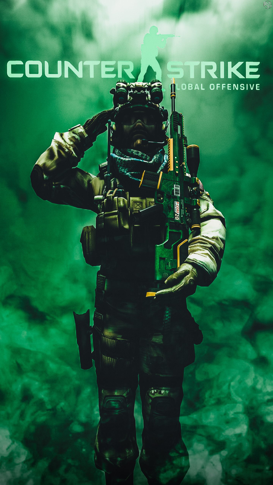

主页
玩法介绍
游戏历史
关于CSGO

游戏介绍：CS这款独特Mod自1999年发布以来成为游戏界的奇葩，是全世界PC平台最受欢迎的网络对战游戏，”Valve发言人Doug Lombardi说道。“过去数年，它仍然是全世界最流行的游戏之一，包括电子竞技方面，全球系列销量超过2500万套。CS：GO将完善CS知名的游戏玩法，呈现PC平台最棒的游戏，同时还将包括次世代主机和Mac主机。”
《反恐精英：全球攻势》由Valve和Hidden Path Entertainment联合开发，Hidden Path Entertainment曾开发CS的升级版《CS：S》。CS：GO将在本月底在西雅图举行的PAX街机游戏大展发布试玩，同时还包括伦敦的欧洲游戏嘉年华游戏是以1999年的“CS”为原型制作的新作，该作在团队竞技游戏模式的基础上加以开发。游戏将玩家分为反恐精英（Counter Terrorists/CT）阵营与恐怖分子（Terrorists/T）阵营两队，每个队伍必须在一个地图上进行多回合的战斗。赢得回合的方法是达到该地图要求的目标，或者是完全消灭敌方玩家